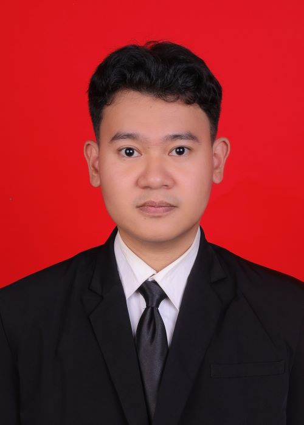

01
Berpihak pada Murid
Merancang pembelajaran dengan memperhatikan kesiapan, kebutuhan, dan keberagaman cara belajar murid.
Mengenal latar belakang, nilai, kompetensi, dan arah pengembangan profesional saya sebagai calon guru.

Mahasiswa Pendidikan Profesi Guru yang memiliki ketertarikan pada pembelajaran Informatika yang aktif, inklusif, dan relevan dengan kehidupan murid.
Saya percaya bahwa teknologi bukan sekadar materi yang dipelajari, tetapi sarana untuk membangun kemampuan berpikir, berkreasi, berkolaborasi, dan memecahkan masalah. Melalui PPG dan PPL, saya terus mengembangkan kemampuan merancang pengalaman belajar yang memanusiakan murid.
Merancang pembelajaran dengan memperhatikan kesiapan, kebutuhan, dan keberagaman cara belajar murid.
Menggunakan pengalaman, umpan balik, dan data belajar sebagai dasar untuk memperbaiki praktik.
Membangun hubungan positif bersama murid, rekan sejawat, guru pamong, dan komunitas sekolah.